using GMT
coast(region=[110 140 20 35], # The Map limits
proj=(name=:Albers, center=[125 20], parallels=[25 45]), # The projection parameters
frame=:ag, # Tell it to set annotations and grid lines automatically
resolution=:low, # Use the low resolution coastlines
area=250, # Do not plot polygons with areas < 250 km^2
land=:green, # Paint land with green
shore=:thinnest, # Coastlines are drwan with a 0.1 pt thickness
title="Albers equal-area conic map projection",
show=true) # Display the figureGMT Map Projections
GMT implements more than 30 different projections. They all project the input coordinates longitude and latitude to positions on a map. In general, \(x’ = f(x,y,z)\) and \(y’ = g(x,y,z)\), where z is implicitly given as the radial vector length to the (x,y) point on the chosen ellipsoid. The functions f and g can be quite nasty and we will refrain from presenting details in this document. The interested read is referred to Snyder [1987] [20]. We will mostly be using the coast command to demonstrate each of the projections. GMT map projections are grouped into four categories depending on the nature of the projection. The groups are
Click on any projection below to jump to its detailed example.
Conic projections
Albers conic equal-area projection
This projection, developed by Albers in 1805, is predominantly used to map regions of large east-west extent, in particular the United States. It is a conic, equal-area projection, in which parallels are unequally spaced arcs of concentric circles, more closely spaced at the north and south edges of the map. Meridians, on the other hand, are equally spaced radii about a common center, and cut the parallels at right angles. Distortion in scale and shape vanishes along the two standard parallels. Between them, the scale along parallels is too small; beyond them it is too large. The opposite is true for the scale along meridians. To define the projection in GMT you need to provide the following information:
- Name: aea, Albers, GMT code -> B (width) b (scale)
- Longitude and latitude of the projection center.
- Two standard parallels.
- Map scale in cm/degree or 1:xxxxx notation, or map width.
Note that you must include the 1: if you choose to specify the scale that way. E.g., you can say 0.5 which means 0.5 cm/degree or 1:200000 which means 1 cm on the map equals 200,000 cm along the standard parallels. The projection center defines the origin of the rectangular map coordinates. As an example we will make a map of the region near Taiwan. We choose the center of the projection to be at 125ºE/20ºN and 25ºN and 45ºN as our two standard parallels. We desire a map that is 12 cm wide (the dafault). The complete command needed to generate the map below is therefore given by:
Equidistant conic
The equidistant conic projection was described by the Greek philosopher Claudius Ptolemy about A.D. 150. It is neither conformal or equal-area, but serves as a compromise between them. The scale is true along all meridians and the standard parallels. To select this projection in GMT you must provide the same information as for the other conic projection, i.e.,
- Name: eqdc, conicEquidistant, GMT code -> D (width) d (scale)
- Longitude and latitude of the projection center.
- Two standard parallels.
- Map scale in cm/degree or 1:xxxxx notation, or map width.
The equidistant conic projection is often used for atlases with maps of small countries. As an example, we generate a map of Cuba:
using GMT
coast(region=[-88 -70 18 24], proj=(name=:eqdc, center=[-79 21], parallels=[19 23]),
frame=:ag, res=:intermediate, borders=(type=1,pen=("thick","red")), land=:green,
shore=:thinnest, title="Equidistant conic map projection", show=true)Lambert conic conformal
This conic projection was designed by the Alsatian mathematician Johann Heinrich Lambert (1772) and has been used extensively for mapping of regions with predominantly east-west orientation, just like the Albers projection. Unlike the Albers projection, Lambert’s conformal projection is not equal-area. The parallels are arcs of circles with a common origin, and meridians are the equally spaced radii of these circles. As with Albers projection, it is only the two standard parallels that are distortion-free. To select this projection in GMT you must provide the same information as for the Albers projection, i.e.,
- Name: lcc, lambertConic, GMT code -> L (width) l (scale)
- Longitude and latitude of the projection center.
- Two standard parallels.
- Map scale in cm/degree or 1:xxxxx notation, or map width.
The Lambert conformal projection has been used for basemaps for all the 48 contiguous States with the two fixed standard parallels 33ºN and 45ºN. We will generate a map of the continental USA using these parameters. Note that with all the projections you have the option of selecting a rectangular border rather than one defined by meridians and parallels. Here, we choose the regular WESN region, a “fancy” basemap frame, and use degrees west for longitudes. The generating command used is
using GMT
coast(region=[-130 -70 24 52], proj=(name=:lambertConic, center=[-100 35], parallels=[33 45]),
frame=:ag, res=:low, borders=((type=1, pen=("thick","red")), (type=2, pen=("thinner",))),
area=500, land=:tan, water=:blue, shore=(:thinnest,:white),
title="Lambert conformal conic map projection", show=true)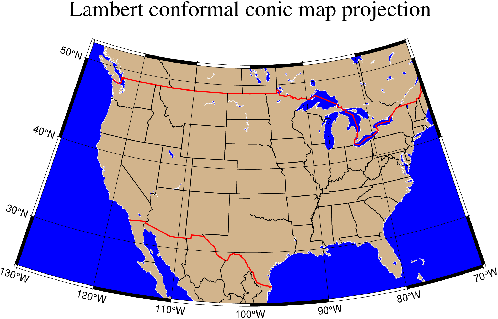
(American) polyconic projection
The polyconic projection, in Europe usually referred to as the American polyconic projection, was introduced shortly before 1820 by the Swiss-American cartographer Ferdinand Rodulph Hassler (1770–1843). As head of the Survey of the Coast, he was looking for a projection that would give the least distortion for mapping the coast of the United States. The projection acquired its name from the construction of each parallel, which is achieved by projecting the parallel onto the cone while it is rolled around the globe, along the central meridian, tangent to that parallel. As a consequence, the projection involves many cones rather than a single one used in regular conic projections.
The polyconic projection is neither equal-area, nor conformal. It is true to scale without distortion along the central meridian. Each parallel is true to scale as well, but the meridians are not as they get further away from the central meridian. As a consequence, no parallel is standard because conformity is lost with the lengthening of the meridians.
- Name: poly, Polyconic, GMT code -> Poly (width) poly (scale)
Below we reproduce the illustration by Snyder [1987], with a gridline every 10 and annotations only every 30º in longitude:
using GMT
coast(region=(-180,-20,0,90), proj=:poly, xaxis=(annot=30,grid=10), yaxis=(annot=10,grid=10),
area=1000, land=:lightgray, shore=:thinnest, title="(American) polyconic projection", show=true)
Azimuthal projections
Lambert Azimuthal Equal-Area
This projection was developed by Lambert in 1772 and is typically used for mapping large regions like continents and hemispheres. It is an azimuthal, equal-area projection, but is not perspective. Distortion is zero at the center of the projection, and increases radially away from this point. To define this projection in GMT you must provide the following information:
- Name: laea, lambertAzimuthal, GMT code -> A (width) a (scale)
- Longitude and latitude of the projection center.
- Optionally, the horizon, i.e., the number of degrees from the center to the edge (<= 180, default is 90).
- Scale as 1:xxxxx or as radius/latitude where radius is the projected distance on the map from projection center to an oblique latitude where 0 would be the oblique Equator, or map width.
Two different types of maps can be made with this projection depending on how the region is specified. We will give examples of both types.
Rectangular map
In this mode we define our region by specifying the longitude/latitude of the lower left and upper right corners instead of the usual west, east, south, north boundaries. The reason for specifying our area this way is that for this and many other projections, lines of equal longitude and latitude are not straight lines and are thus poor choices for map boundaries. Instead we require that the map boundaries be rectangular by defining the corners of a rectangular map boundary. Using 0ºE/40ºS (lower left) and 60ºE/10ºS (upper right) as our corners we try
.. Este so funciona uma vez por causa do -Gp. Depois e preciso fazer “destroy”
using GMT
coast(region="0/-40/60/-10+r", proj=(name=:laea, center=[30,-30]), frame=:ag,
area=500, land=(pattern=10,dpi=300), shore=:thinnest, title="Rectangular map", show=true)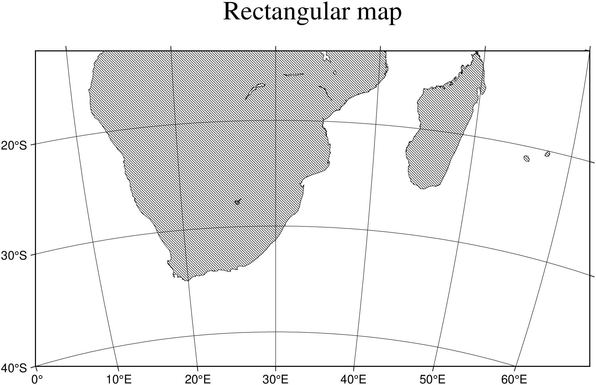
Note that an +r is appended to the region option to inform GMT that the region has been selected using the rectangle technique, otherwise it would try to decode the values as west, east, south, north and report an error since east < west.
Hemisphere map
Here, you must specify the world as your region. E.g., to obtain a hemisphere view that shows the Americas, try
using GMT
coast(region=:global, proj=(name=:laea, center=[280,30]), frame=:g, area=1000,
land=:navy, title="Lambert Equal Area", show=true)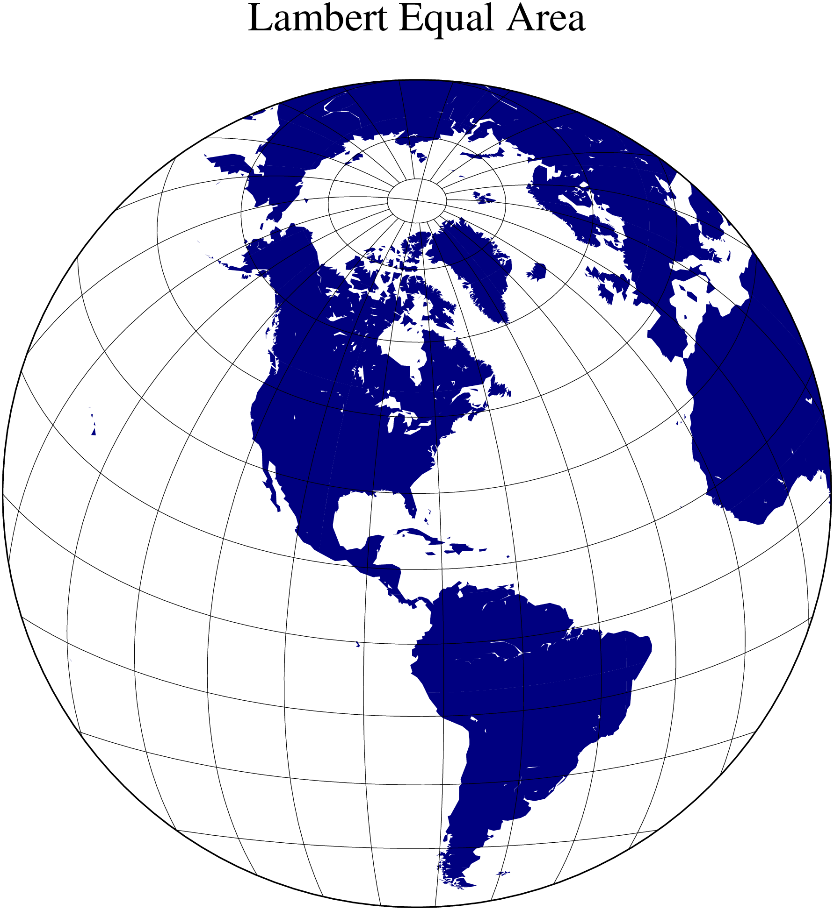
Stereographic Equal-Angle
This is a conformal, azimuthal projection that dates back to the Greeks. Its main use is for mapping the polar regions. In the polar aspect all meridians are straight lines and parallels are arcs of circles. While this is the most common use it is possible to select any point as the center of projection. The requirements are
- Name: stere, Stereographic, GMT code -> S (width) s (scale)
- Longitude and latitude of the projection center.
- Optionally, the horizon, i.e., the number of degrees from the center to the edge (< 180, default is 90).
- Scale as 1:xxxxx (true scale at pole), slat/1:xxxxx (true scale at standard parallel slat), or radius/latitude where radius is distance on map in inches from projection center to a particular oblique latitude, or simply map width.
A default map scale factor of 0.9996 will be applied by default. However, the setting is ignored when a standard parallel has been specified since the scale is then implicitly given. We will look at two different types of maps.
Polar Stereographic Map
In our first example we will let the projection center be at the north pole. This means we have a polar stereographic projection and the map boundaries will coincide with lines of constant longitude and latitude. An example is given by
using GMT
coast(region=(-30,30,60,72), proj=(name=:Stereographic, center=[0,90], paralles=60),
frame=:a10g, area=250, land=:royalblue, water=:seashell,
figscale="1:30000000", title="Polar Stereographic", show=true)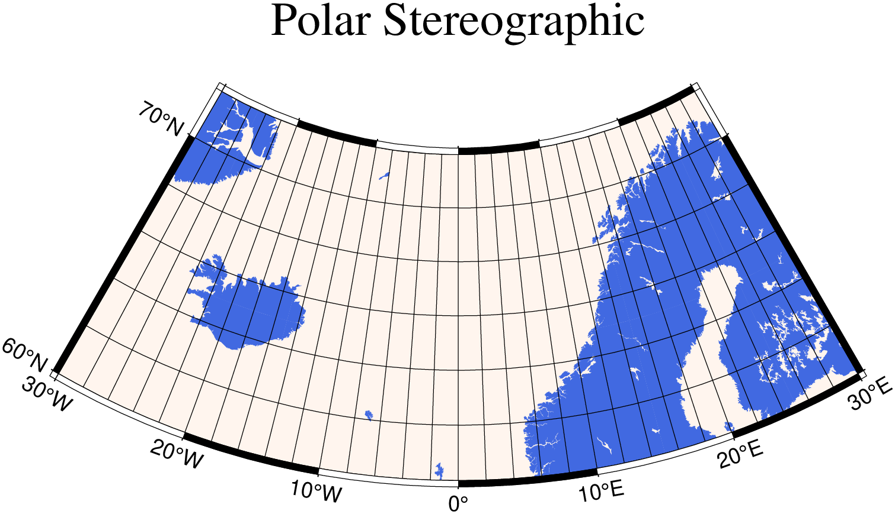
Rectangular stereographic map
As with Lambert’s azimuthal equal-area projection we have the option to use rectangular boundaries rather than the wedge-shape typically associated with polar projections. This choice is defined by selecting two points as corners in the rectangle and appending an +r to the region option. This command produces a map as presented in
using GMT
coast(region="-25/59/70/72+r", proj=(name=:stereographic, center=(10,90)), frame=:a20g,
area=250, land=:darkbrown, shore=:thinnest, water=:lightgray,
title="Rectangular stereographic", show=true)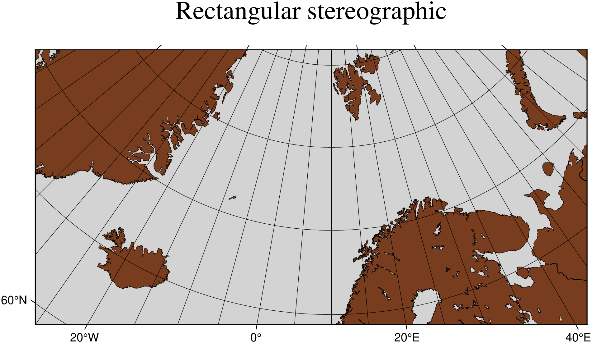
General stereographic map
In terms of usage this projection is identical to the Lambert azimuthal equal-area projection. Thus, one can make both rectangular and hemispheric maps. Our example shows Australia using a projection pole at 130ºE/30ºS. The command used was
using GMT
coast(region="100/-42/160/-8r", proj=(name=:stereographic, center=(130,-30)), frame=:ag,
area=500, land=:green, ocean=:lightblue, shore=:thinnest,
title="General stereographic", show=true)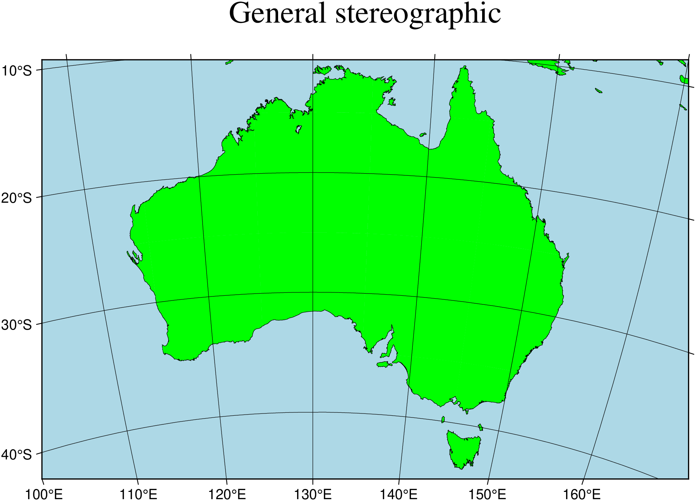
Perspective projection
The perspective projection imitates in 2 dimensions the 3-dimensional view of the earth from space. The implementation in GMT is very flexible, and thus requires many input variables. Those are listed and explained below, with the values used in figure below between brackets.
- Name: GMT code -> G (width) g (scale)
- Longitude and latitude of the projection center (4ºE/52ºN).
- Altitude of the viewer above sea level in kilometers (230 km). If this value is less than 10, it is assumed to be the distance of the viewer from the center of the earth in earth radii. If an +r is appended, it is the distance from the center of the earth in kilometers.
- Azimuth in degrees (90, due east). This is the direction in which you are looking, measured clockwise from north.
- Tilt in degrees (60). This is the viewing angle relative to zenith. So a tilt of 0º is looking straight down, 60º is looking from 30º above the horizon.
- Twist in degrees (180). This is the boresight rotation (clockwise) of the image. The twist of 180º in the example mimics the fact that the Space Shuttle flies upside down.
- Width and height of the viewpoint in degrees (60). This number depends on whether you are looking with the naked eye (in which case you view is about 60º wide), or with binoculars, for example.
- Scale as 1:xxxxx or as radius/latitude where radius is distance on map in inches from projection center to a particular oblique latitude, or map width (10 cm).
The imagined view of northwest Europe from a Space Shuttle at 230 km looking due east is thus accomplished by the following coast command:
using GMT
coast(region=:g, proj="G4/52/230/90/60/180/60/60", xaxis=(annot=2,grid=2), yaxis=(annot=1,grid=1),
rivers=:all, land=:lightbrown, ocean=:lightblue, shore=:thinnest,
par=(:MAP_ANNOT_MIN_SPACING,0.65), title="Perspective", show=true)
Orthographic
The orthographic azimuthal projection is a perspective projection from infinite distance. It is therefore often used to give the appearance of a globe viewed from outer space. As with Lambert’s equal-area and the stereographic projection, only one hemisphere can be viewed at any time. The projection is neither equal-area nor conformal, and much distortion is introduced near the edge of the hemisphere. The directions from the center of projection are true. The projection was known to the Egyptians and Greeks more than 2,000 years ago. Because it is mainly used for pictorial views at a small scale, only the spherical form is necessary.
To specify the orthographic projection the same options -Jg or -JG as the perspective projection are used, but with fewer variables to supply:
- Name: ortho, Ortographic, GMT code -> G (width) g (scale)
- Longitude and latitude of the projection center.
- Optionally, the horizon, i.e., the number of degrees from the center to the edge (<= 90, default is 90).
- Scale as 1:xxxxx or as radius/latitude where radius is distance on map in inches from projection center to a particular oblique latitude, or map width.
Our example of a perspective view centered on 75ºW/40ºN can therefore be generated by the following coast command:
using GMT
coast(region=:g, proj=(name=:ortho, center=(-75,41)), frame=:g, area=5000,
land=:pink, ocean=:thistle, title="Orthographic", show=true)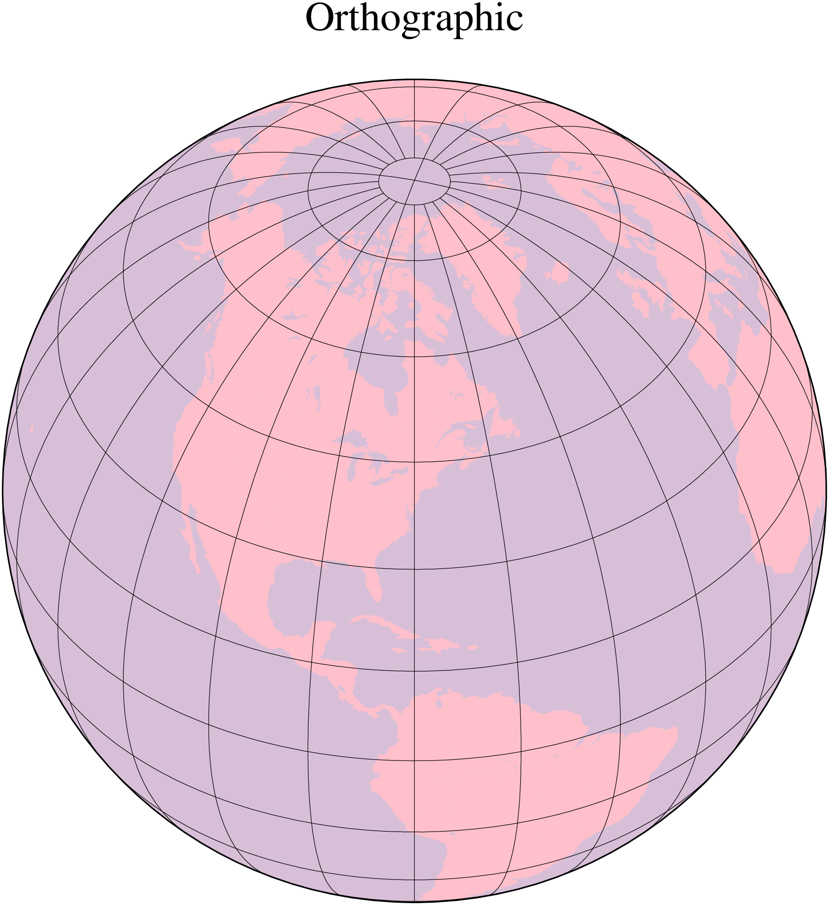
Azimuthal Equidistant
The most noticeable feature of this azimuthal projection is the fact that distances measured from the center are true. Therefore, a circle about the projection center defines the locus of points that are equally far away from the plot origin. Furthermore, directions from the center are also true. The projection, in the polar aspect, is at least several centuries old. It is a useful projection for a global view of locations at various or identical distance from a given point (the map center).
To specify the azimuthal equidistant projection you must supply:
- Name: aeqd, azimuthalEquidistant, GMT code -> E (width) e (scale)
- Longitude and latitude of the projection center.
- Optionally, the horizon, i.e., the number of degrees from the center to the edge (<= 180, default is 180).
- Scale as 1:xxxxx or as radius/latitude where radius is distance on map in inches from projection center to a particular oblique latitude, or map width.
Our example of a global view centered on 100ºW/40ºN can therefore be generated by the following coast command. Note that the antipodal point is 180º away from the center, but in this projection this point plots as the entire map perimeter:
using GMT
coast(region=:global, proj=(name=:azimuthalEquidistant, center=(-100,40)), frame=:g,
area=10000, land=:lightgray, shore=:thinnest, title="Azimuthal Equidistant", show=true)pscoast [WARNING]: Fill/clip continent option (-G) may not work for this projection.
pscoast [WARNING]: If the antipode (0/1.16913e-311) is in the ocean then chances are good it will work.
pscoast [WARNING]: Otherwise, avoid projection center coordinates that are exact multiples of 80 degrees.
Gnomonic
The Gnomonic azimuthal projection is a perspective projection from the center onto a plane tangent to the surface. Its origin goes back to the old Greeks who used it for star maps almost 2500 years ago. The projection is neither equal-area nor conformal, and much distortion is introduced near the edge of the hemisphere; in fact, less than a hemisphere may be shown around a given center. The directions from the center of projection are true. Great circles project onto straight lines. Because it is mainly used for pictorial views at a small scale, only the spherical form is necessary.
To specify the Gnomonic projection you must supply:
- Name: gnom, Gnomonic, GMT code -> F (width) f (scale)
- Longitude and latitude of the projection center.
- Optionally, the horizon, i.e., the number of degrees from the center to the edge (< 90, default is 60).
- Scale as 1:xxxxx or as radius/latitude where radius is distance on map in cm from projection center to a particular oblique latitude, or map width.
Using a horizon of 60, our example of this projection centered on 120ºW/35ºN can therefore be generated by the following command:
using GMT
coast(region=:g, proj=(name=:Gnomonic, center=(-120,35), horizon=60),
frame=(annot=30, grid=15), area=10000, land=:tan, ocean=:cyan,
shore=:thinnest, title="Gnomonic", show=true)
Cylindrical projections
Cylindrical projections are easily recognized for its shape: maps are rectangular and meridians and parallels are straight lines crossing at right angles. But that is where similarities between the cylindrical projections supported by GMT (Mercator, transverse Mercator, universal transverse Mercator, oblique Mercator, Cassini, cylindrical equidistant, cylindrical equal-area, Miller, and cylindrical stereographic projections) stops. Each have a different way of spacing the meridians and parallels to obtain certain desirable cartographic properties.
Mercator
Probably the most famous of the various map projections, the Mercator projection takes its name from the Flemish cartographer Gheert Cremer, better known as Gerardus Mercator, who presented it in 1569. The projection is a cylindrical and conformal, with no distortion along the equator. A major navigational feature of the projection is that a line of constant azimuth is straight. Such a line is called a rhumb line or loxodrome. Thus, to sail from one point to another one only had to connect the points with a straight line, determine the azimuth of the line, and keep this constant course for the entire voyage. The Mercator projection has been used extensively for world maps in which the distortion towards the polar regions grows rather large, thus incorrectly giving the impression that, for example, Greenland is larger than South America. In reality, the latter is about eight times the size of Greenland. Also, the Former Soviet Union looks much bigger than Africa or South America. One may wonder whether this illusion has had any influence on U.S. foreign policy.
In the regular Mercator projection, the cylinder touches the globe along the equator. Other orientations like vertical and oblique give rise to the Transverse and Oblique Mercator projections, respectively. We will discuss these generalizations following the regular Mercator projection.
The regular Mercator projection requires a minimum of parameters. To use it in GMT programs you supply this information (the first two items are optional and have defaults):
- Name: merc, Mercator, GMT code -> M (width) m (scale)
- Central meridian [Middle of your map].
- Standard parallel for true scale [Equator]. When supplied, central meridian must be supplied as well.
- Scale along the equator in cm/degree or 1:xxxxx, or map width.
Our example presents a world map at a scale of 0.012 inch pr degree which will give a map 4.32 inch wide. It was created with the command:
using GMT
coast(region=(0,360,-70,70), proj=:Mercator, xaxis=(annot=60,ticks=15), yaxis=(annot=30,ticks=15),
area=:5000, land=:red, scale=0.03, par=(:MAP_FRAME_TYPE,"fancy+"), title="Mercator", show=true)
While this example is centered on the Dateline, one can easily choose another configuration with the region option. A map centered on Greenwich would specify the region with region=(-180,180,-70,70)
Transverse Mercator
The transverse Mercator was invented by Lambert in 1772. In this projection the cylinder touches a meridian along which there is no distortion. The distortion increases away from the central meridian and goes to infinity at 90º from center. The central meridian, each meridian 90º away from the center, and equator are straight lines; other parallels and meridians are complex curves. The projection is defined by specifying:
- Name: tmerc, transverseMercator, GMT code -> T (width) t (scale)
- The central meridian.
- Optionally, the latitude of origin (default is the equator).
- Scale along the equator in cm/degree or 1:xxxxx, or map width.
The optional latitude of origin defaults to Equator if not specified. Although defaulting to 1, you can change the map scale factor via the PROJ_SCALE_FACTOR parameter. Our example shows a transverse Mercator map of south-east Europe and the Middle East with 35ºE as the central meridian:
using GMT
coast(region="20/30/50/45r", proj=(name=:tmerc, center=35), frame=:ag, area=250,
land=:lightbrown, ocean=:seashell, shore=:thinnest, scale=0.45,
title="Transverse Mercator", show=true)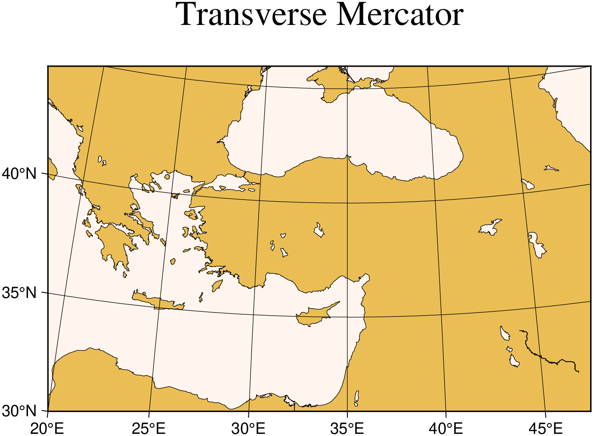
The transverse Mercator can also be used to generate a global map - the equivalent of the 360º Mercator map. Using the command
using GMT
coast(region=(0,360,-80,80), proj=(name=:tmerc, center=[330 -45]),
frame=(annot=30, grid=:auto, axes=:WSne), area=2000, land=:black,
water=:lightblue, title="Transverse Mercator", show=true)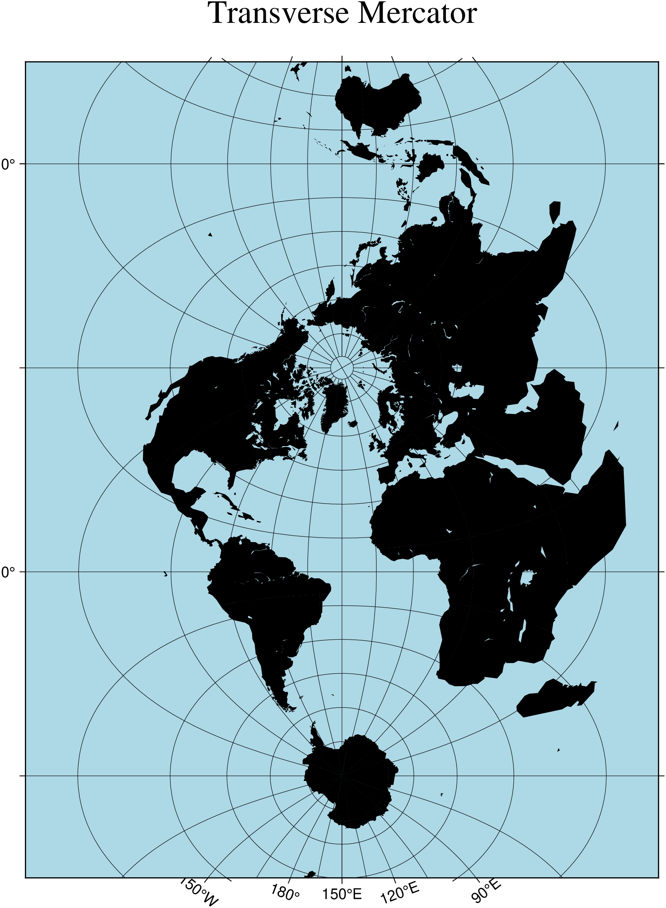
we made the map illustrated in figure below. Note that when a world map is given (indicated by region=(0,360,-80,80)), the arguments are interpreted to mean oblique degrees, i.e., the 360º range is understood to mean the extent of the plot along the central meridian, while the “south” and “north” values represent how far from the central longitude we want the plot to extend. These values correspond to latitudes in the regular Mercator projection and must therefore be less than 90.
Universal Transverse Mercator (UTM)
Oblique Mercator
Oblique configurations of the cylinder give rise to the oblique Mercator projection. It is particularly useful when mapping regions of large lateral extent in an oblique direction. Both parallels and meridians are complex curves. The projection was developed in the early 1900s by several workers. Several parameters must be provided to define the projection. GMT offers three different definitions:
- Option -Jo[a|A] or -JO[a|A]:
- Name: omerc, obliqueMerc1, GMT code -> Oa (width) oa (scale)
- Longitude and latitude of projection center.
- Azimuth of the oblique equator.
- Scale in cm/degree or 1:xxxxx along oblique equator, or map width.
- Option -Jo[b|B] or -JO[b|B]:
- Name: omerc2, obliqueMerc2, GMT code -> Ob (width) ob (scale)
- Longitude and latitude of projection center.
- Longitude and latitude of second point on oblique equator.
- Scale in cm/degree or 1:xxxxx along oblique equator, or map width.
- Option -Joc|C or -JOc|C:
- Name: omercp, obliqueMerc3, GMT code -> Oc (width) oc (scale)
- Longitude and latitude of projection center.
- Longitude and latitude of projection pole.
- Scale in cm/degree or 1:xxxxx along oblique equator, or map width.
For all three definitions, the upper case A|B|C means we will allow projection poles in the southern hemisphere. These forms are only available when using the GMT letters code. Our example was produced by the command
using GMT
coast(region="270/20/305/25+r", proj=(name=:omercp, center=[280 25.5], parallels=[22 69]),
frame=:ag, area=250, shore=:thinnest, land=:burlywood, water=:azure,
rose="jTR+w1+f2+l+o0.4", par=(FONT_TITLE=8, MAP_TITLE_OFFSET=0.12),
title="Oblique Mercator", show=true)
Cassini cylindrical
This cylindrical projection was developed in 1745 by César-François Cassini de Thury for the survey of France. It is occasionally called Cassini-Soldner since the latter provided the more accurate mathematical analysis that led to the development of the ellipsoidal formulae. The projection is neither conformal nor equal-area, and behaves as a compromise between the two end-members. The distortion is zero along the central meridian. It is best suited for mapping regions of north-south extent. The central meridian, each meridian 90º away, and equator are straight lines; all other meridians and parallels are complex curves. The requirements to define this projection are:
- Name: cass, Cassini, GMT code -> C (width) c (scale)
- Longitude and latitude of central point.
- Scale in cm/degree or as 1:xxxxx, or map width.
A detailed map of the island of Sardinia centered on the 8º45’E meridian using the Cassini projection can be obtained by running the command:
using GMT
coast(region="7:30/38:30/10:30/41:30r", proj=(name=:Cassini, center=[8.75 40]),
frame=:afg, map_scale="jBR+c40+w100+f+o0.4/0.5", land=:springgreen,
water=:azure, shore=:thinnest, rivers=(type=:all, pen=:thinner),
par=(:FONT_LABEL,12), title="Cassini cylindrical", show=true)Cylindrical equidistant
This simple cylindrical projection is really a linear scaling of longitudes and latitudes. The most common form is the Plate Carrée projection, where the scaling of longitudes and latitudes is the same. All meridians and parallels are straight lines. The projection can be defined by:
- Name: eqc, PlateCarree, equidistCylindrical, GMT code -> Q (width) q (scale)
- The central meridian [Middle of your map].
- Standard parallel [Equator].
- Scale in cm/degree or as 1:xxxxx, or map width.
The first two of these are optional and have defaults. When the standard parallel is defined, the central meridian must be supplied as well.
A world map centered on the dateline using this projection can be obtained by running the command:
using GMT
coast(region=:global, proj=:equidistCylindrical, frame=(annot=60, ticks=30, grid=30),
area=5000, land=:tan4, water=:lightcyan, title="Cylindrical equidistant", show=true)
Different relative scalings of longitudes and latitudes can be obtained by selecting a standard parallel different from the equator. Some selections for standard parallels have practical properties as shown in table:
| Name | lat |
|---|---|
| Grafarend and Niermann, minimum linear distortion | 61.7º |
| Ronald Miller Equirectangular | 50.5º |
| Ronald Miller, minimum continental distortion | 43.5º |
| Grafarend and Niermann | 42º |
| Ronald Miller, minimum overall distortion | 37.5º |
| Plate Carrée, Simple Cylindrical, Plain/Plane | 0º |
Cylindrical equal-area
This cylindrical projection is actually several projections, depending on what latitude is selected as the standard parallel. However, they are all equal area and hence non-conformal. All meridians and parallels are straight lines. The requirements to define this projection are:
- Name: cea, cylindricalEqualArea, GMT code -> Y (width) y (scale)
- The central meridian.
- The standard parallel.
- Scale in cm/degree or as 1:xxxxx, or map width
While you may choose any value for the standard parallel and obtain your own personal projection, there are seven choices of standard parallels that result in known (or named) projections. These are listed in Table.
| Name | lat |
|---|---|
| Balthasart | 50º |
| Gall | 45º |
| Hobo-Dyer | 37º30’ (= 37.5º) |
| Trystan Edwards | 37º24’ (= 37.4º) |
| Caster | 37º04’ (= 37.0666º) |
| Behrman | 30º |
| Lambert | 0º |
For instance, a world map centered on the 35ºE meridian using the Behrman projection can be obtained by running the command:
using GMT
coast(region=(-145,215,-90,90), proj=(name=:cylindricalEqualArea, center=(35,30)),
frame=(annot=45, grid=45), area=10000, water=:dodgerblue,
shore=:thinnest, title="Cylindrical equal-area", show=true)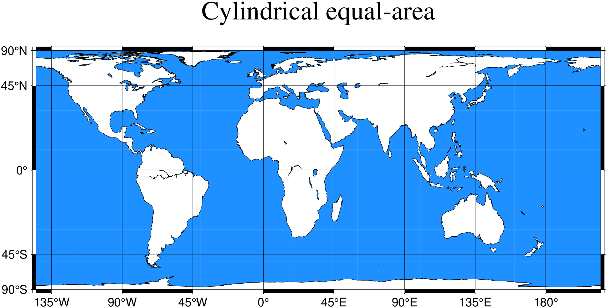
As one can see there is considerable distortion at high latitudes since the poles map into lines.
Miller Cylindrical
This cylindrical projection, presented by Osborn Maitland Miller of the American Geographic Society in 1942, is neither equal nor conformal. All meridians and parallels are straight lines. The projection was designed to be a compromise between Mercator and other cylindrical projections. Specifically, Miller spaced the parallels by using Mercator’s formula with 0.8 times the actual latitude, thus avoiding the singular poles; the result was then divided by 0.8. There is only a spherical form for this projection. Specify the projection by:
- Name: mill, Miller, GMT code -> J (width) j (scale)
- Optionally, the central meridian (default is the middle of your map).
- Scale in cm/degree or as 1:xxxxx, or map width.
For instance, a world map centered on the 90ºE meridian at a map scale of 1:400,000,000 can be obtained as follows:
using GMT
coast(region=(-90,270,-80,90), proj=:Miller, xaxis=(annot=45,grid=45),
yaxis=(annot=30,grid=30), area=10000, land=:khaki, water=:azure,
shore=:thinnest, scale="1:400000000", title="Miller Cylindrical", show=true)
Cylindrical stereographic
The cylindrical stereographic projections are certainly not as notable as other cylindrical projections, but are still used because of their relative simplicity and their ability to overcome some of the downsides of other cylindrical projections, like extreme distortions of the higher latitudes. The stereographic projections are perspective projections, projecting the sphere onto a cylinder in the direction of the antipodal point on the equator. The cylinder crosses the sphere at two standard parallels, equidistant from the equator. The projections are defined by:
- Name: cyl_stere, cylindricalStereographic, GMT code -> Cyl_stere (width) cyl_stere (scale)
- The central meridian (uses the middle of the map when omitted).
- The standard parallel (default is the Equator). When used, central meridian needs to be given as well.
- Scale in cm/degree or as 1:xxxxx, or map width
Some of the selections of the standard parallel are named for the cartographer or publication that popularized the projection
| Name | lat |
|---|---|
| Miller’s modified Gall | 66.159467º |
| Kamenetskiy’s First | 55º |
| Gall’s stereographic | 45º |
| Bolshoi Sovietskii Atlas Mira or Kamenetskiy’s Second | 30º |
| Braun’s cylindrical | 0º |
A map of the world, centered on the Greenwich meridian, using the Gall’s stereographic projection (standard parallel is 45º, Figure Gall’s stereographic projection), is obtained as follows:
using GMT
coast(region=(-180,180,-60,80), proj=(name=:cylindricalStereographic, center=(0,45)),
xaxis=(annot=60,ticks=30, grid=30), yaxis=(annot=30,grid=30), area=5000,
shore=:black, land=:seashell4, ocean=:antiquewhite1,
title="Cylindrical stereographic", show=true)
Miscellaneous projections
GMT supports 8 common projections for global presentation of data or models. These are the Hammer, Mollweide, Winkel Tripel, Robinson, Eckert IV and VI, Sinusoidal, and Van der Grinten projections. Due to the small scale used for global maps these projections all use the spherical approximation rather than more elaborate elliptical formulae.
In all cases, the specification of the central meridian can be skipped. The default is the middle of the longitude range of the plot, specified by the (region) option.
Hammer
The equal-area Hammer projection, first presented by the German mathematician Ernst von Hammer in 1892, is also known as Hammer-Aitoff (the Aitoff projection looks similar, but is not equal-area). The border is an ellipse, equator and central meridian are straight lines, while other parallels and meridians are complex curves. The projection is defined by selecting:
- Name: hamm, Hammer, GMT code -> H (width) h (scale)
- The central meridian [Middle of your map].
- Scale along equator in cm/degree or 1:xxxxx, or map width.
A view of the Pacific ocean using the Dateline as central meridian is accomplished thus
using GMT
coast(region=:g, proj=:Hammer, frame=:g, area=10000, land=:black,
ocean=:cornsilk, title="Hammer", show=true)
Mollweide
This pseudo-cylindrical, equal-area projection was developed by the German mathematician and astronomer Karl Brandan Mollweide in 1805. Parallels are unequally spaced straight lines with the meridians being equally spaced elliptical arcs. The scale is only true along latitudes 4044’ north and south. The projection is used mainly for global maps showing data distributions. It is occasionally referenced under the name homalographic projection. Like the Hammer projection, outlined above, we need to specify only two parameters to completely define the mapping of longitudes and latitudes into rectangular x/y coordinates:
- Name: moll, Mollweide, GMT code -> W (width) w (scale)
- The central meridian [Middle of your map].
- Scale along equator in cm/degree or 1:xxxxx, or map width.
An example centered on Greenwich can be generated thus:
using GMT
coast(region=:d, proj=:Mollweide, frame=:g, area=10000, land=:tomato1,
water=:skyblue, title="Mollweide", show=true)
Winkel Tripel
In 1921, the German mathematician Oswald Winkel a projection that was to strike a compromise between the properties of three elements (area, angle and distance). The German word “tripel” refers to this junction of where each of these elements are least distorted when plotting global maps. The projection was popularized when Bartholomew and Son started to use it in its world-renowned “The Times Atlas of the World” in the mid 20th century. In 1998, the National Geographic Society made the Winkel Tripel as its map projection of choice for global maps.
Naturally, this projection is neither conformal, nor equal-area. Central meridian and equator are straight lines; other parallels and meridians are curved. The projection is obtained by averaging the coordinates of the Equidistant Cylindrical and Aitoff (not Hammer-Aitoff) projections. The poles map into straight lines 0.4 times the length of equator. To use it you must enter
- Name: win, Winkel, GMT code -> R (width) r (scale)
- The central meridian [Middle of your map].
- Scale along equator in cm/degree or 1:xxxxx, or map width.
Centered on Greenwich, the example in Figure Winkel Tripel projection was created by this command:
using GMT
coast(region=:d, proj=:Winkel, frame=:g, area=10000, land=:burlywood4,
water=:wheat1, title="Winkel Tripel", show=true)
Robinson
The Robinson projection, presented by the American geographer and cartographer Arthur H. Robinson in 1963, is a modified cylindrical projection that is neither conformal nor equal-area. Central meridian and all parallels are straight lines; other meridians are curved. It uses lookup tables rather than analytic expressions to make the world map “look” right [22]. The scale is true along latitudes 38. The projection was originally developed for use by Rand McNally and is currently used by the National Geographic Society. To use it you must enter
- Name: robin, Robinson, GMT code -> N (width) n (scale)
- The central meridian [Middle of your map].
- Scale along equator in cm/degree or 1:xxxxx, or map width.
Again centered on Greenwich, the example below was created by this command:
using GMT
coast(region=:d, proj=:Robinson, frame=:g, area=10000, land=:goldenrod,
water=:snow2, title="Robinson", show=true)
Eckert IV and VI
The Eckert IV and VI projections, presented by the German cartographer Max Eckert-Greiffendorff in 1906, are pseudo-cylindrical equal-area projections. Central meridian and all parallels are straight lines; other meridians are equally spaced elliptical arcs (IV) or sinusoids (VI). The scale is true along latitudes 40º30’ (IV) and 49º16’ (VI). Their main use is in thematic world maps. To select Eckert IV you must use EckertIV while Eckert VI is selected with EckertVI. If no modifier is given it defaults to Eckert VI. In addition, you must enter
- Name: eck4, EckertIV, GMT code -> Kf (width) kf (scale)
- Name: eck6, EckertVI, GMT code -> Ks (width) ks (scale)
- The central meridian [Middle of your map].
- Scale along equator in cm/degree or 1:xxxxx, or map width.
Centered on the Dateline, the Eckert IV example below was created by this command:
using GMT
coast(region=:d, proj=:EckertIV, frame=:g, area=10000, land=:ivory,
water=:bisque3, shore=:thinnest, title="Eckert IV", show=true)
The same script, EckertVI instead of EckertIV, yields the Eckert VI map:
using GMT
coast(region=:d, proj=:EckertVI, frame=:g, area=10000, land=:ivory,
water=:bisque3, shore=:thinnest, title="Eckert VI", show=true)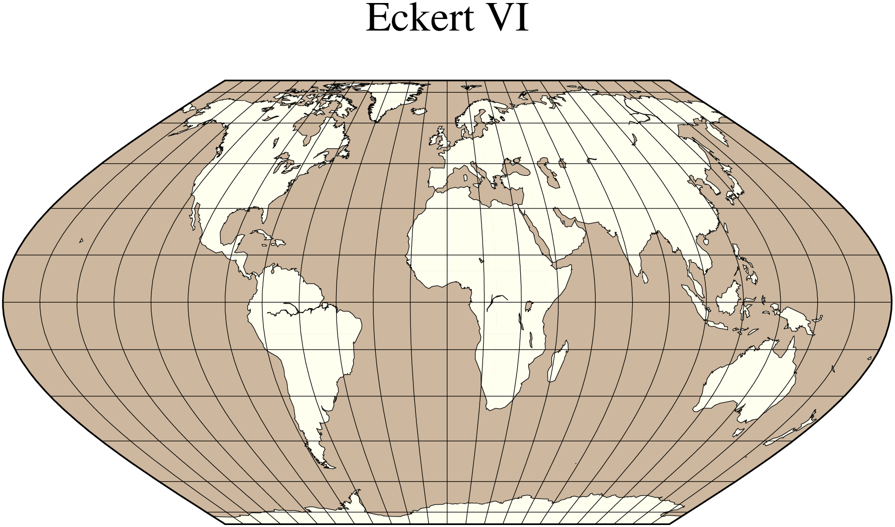
Sinusoidal
The sinusoidal projection is one of the oldest known projections, is equal-area, and has been used since the mid-16th century. It has also been called the “Equal-area Mercator” projection. The central meridian is a straight line; all other meridians are sinusoidal curves. Parallels are all equally spaced straight lines, with scale being true along all parallels (and central meridian). To use it, you need to select:
- Name: sinu, Sinusoidal, GMT code -> I (width) i (scale)
- The central meridian [Middle of your map].
- Scale along equator in cm/degree or 1:xxxxx, or map width.
A simple world map using the sinusoidal projection is therefore obtained by
using GMT
coast(region=:d, proj=:Sinusoidal, xaxis=(grid=30,), yaxis=(grid=15,),
area=10000, land=:coral4, water=:azure3, title="Sinusoidal", show=true)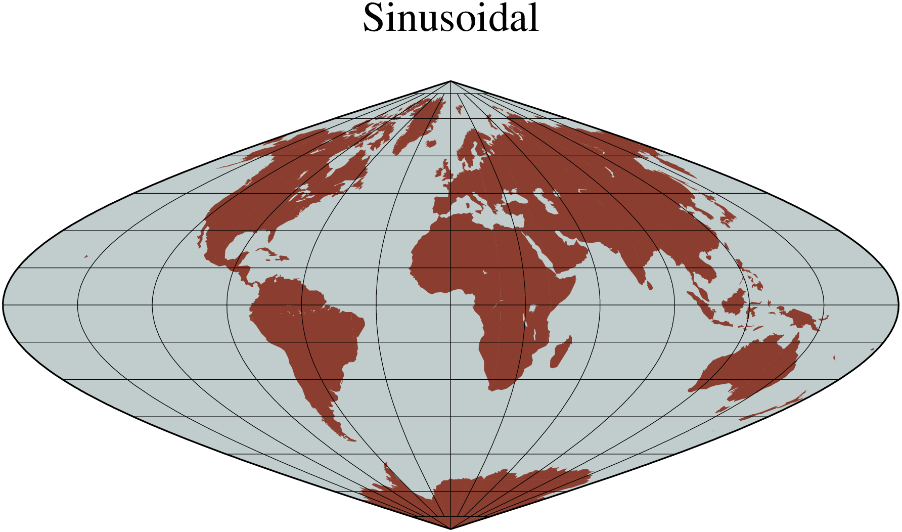
To reduce distortion of shape the interrupted sinusoidal projection was introduced in 1927. Here, three symmetrical segments are used to cover the entire world. Traditionally, the interruptions are at 160ºW, 20ºW, and 60ºE. To make the interrupted map we must call coast for each segment and superpose the results. To produce an interrupted world map (with the traditional boundaries just mentioned) that is 5.04 inches wide we use the scale 12/360 = 0.03333 and offset the subsequent plots horizontally by their widths (140 * 0.03333 and 80 * 0.03333):
using GMT
coast(region=(200,340,-90,90), proj=:Sinusoidal, frame=:g, area=10000,
land=:darkred, water=:azure, scale=0.03333)
coast!(region=(-20,60,-90,90), frame=:g, area=10000, land=:darkgreen,
water=:azure, xshift=4.666)
coast!(region=(60,200,-90,90), frame=:g, area=10000, land=:darkblue,
water=:azure, xshift=2.6664, title="Interupted Sinusoidal", show=true)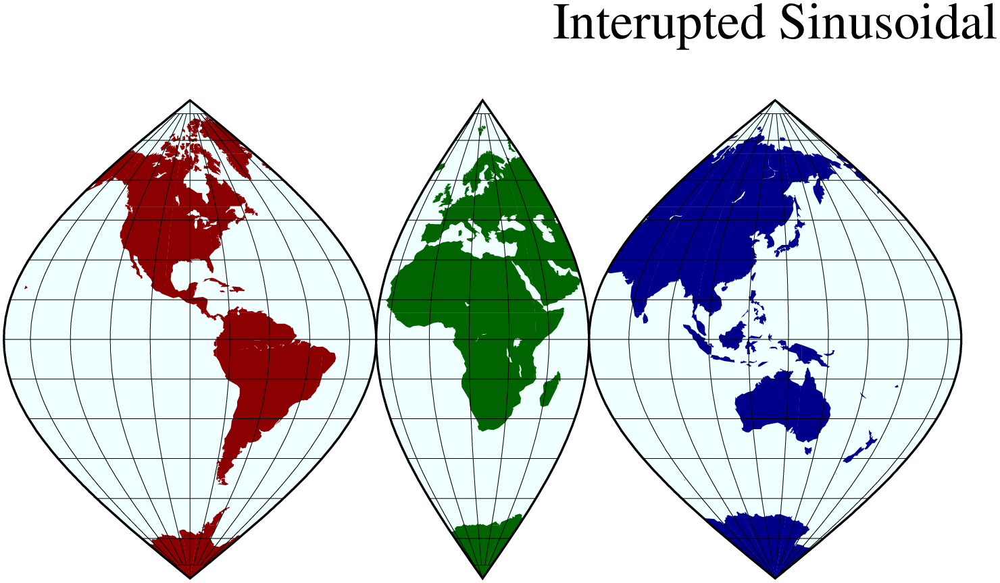
The usefulness of the interrupted sinusoidal projection is basically limited to display of global, discontinuous data distributions like hydrocarbon and mineral resources, etc.
Van der Grinten
The Van der Grinten projection, presented by Alphons J. van der Grinten in 1904, is neither equal-area nor conformal. Central meridian and Equator are straight lines; other meridians are arcs of circles. The scale is true along the Equator only. Its main use is to show the entire world enclosed in a circle. To use it you must enter
- Name: vand, VanderGrinten, GMT code -> V (width) v (scale)
- The central meridian [Middle of your map].
- Scale along equator in cm/degree or 1:xxxxx, or map width.
Centered on the Dateline, the example below was created by this command:
using GMT
coast(region=:g, proj=:VanderGrinten, xaxis=(grid=30,), yaxis=(grid=15,),
land=:lightgray, water=:cornsilk, area=10000, shore=:thinnest,
title="Van der Grinten", show=true)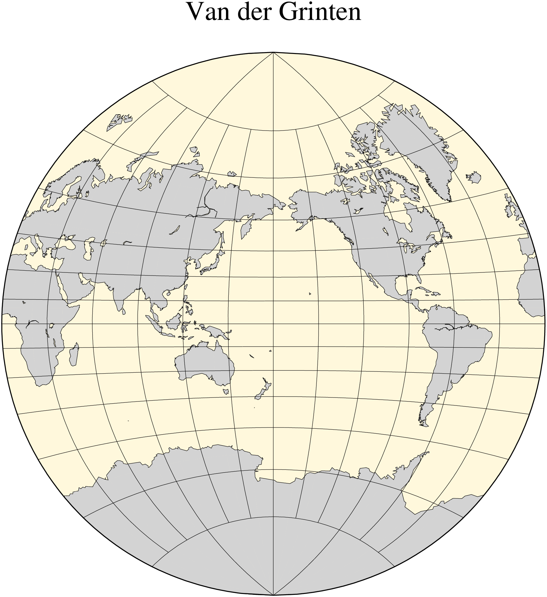